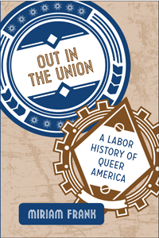

<body bgcolor="#FFFFFF" text="#000000" link="#0000FF" vlink="#CC0000" alink="#CC0000"><center><hr width="350" size="1" align="center" noshade>A groundbreaking history of queer activists who advanced the causes of labor organizing and LGBT rights<hr width="350" size="1" align="center" noshade><p><a href="https://cdcshoppingcart.uchicago.edu/Cart/ChicagoBook.aspx?ISBN=9781439911396&&PRESS=temple" target="_top">Buy this book!</a> | <a href="https://cdcshoppingcart.uchicago.edu/Cart/Cart.aspx?PRESS=temple" target="_top">View Cart</a> | <a href="https://cdcshoppingcart.uchicago.edu/Cart/Cart.aspx?PRESS=temple" target="_top">Check Out</a></p><p></p></center><!--none//--><h1>Out in the Union</h1>
<H2>A Labor History of Queer America</H2>
<h3>Miriam Frank</h3>
<P>cloth 1-4399-1139-8 $54.50, Jun 14, <FONT COLOR=#990033>Available</FONT>
<br>paper 1-4399-1140-1 $29.95, Jan 15, <FONT COLOR=#990033>Available</FONT>
<br>Electronic Book 1-4399-1141-X $29.95 <FONT COLOR=#990033>Available</FONT>
<BR> 240 pp
6x9
</P><h3 align="center"><P><font color="#996633">Outstanding Academic Title, <i>Choice</i>,
2015</font></P>
</H3>
<BLOCKQUOTE><I>"This pioneering book excavates a half century of U.S. labor history to bring to light the contributions of lesbian, gay, bisexual, and transgender unionists while also exposing the complex challenges queer workers face in ‘coming out’ on the job and inside their unions. It also analyzes the historical process through which the labor and LGBT movements, at first wary of each other and under unrelenting attack from the political right, gradually developed a lasting alliance. Rich in detail and insight, </I>Out in the Union <I> makes an important contribution to this all too often neglected aspect of American labor history."</I><br>&#151<b>Ruth Milkman</b>, Professor of Sociology at the Graduate Center and Academic Director of the Joseph S. Murphy Institute for Labor Studies and Worker Education, City University of New York</I></BLOCKQUOTE>
<P><I>Out in the Union</I> tells the continuous story of queer American workers from the mid-1960s through 2013. Miriam Frank shrewdly chronicles the evolution of labor politics with queer activism and identity formation, showing how unions began affirming the rights of lesbian, gay, bisexual, and transgender workers in the 1970s and 1980s. She documents coming out on the job and in the union as well as issues of discrimination and harassment, and the creation of alliances between unions and LGBT communities.
<P>Featuring in-depth interviews with LGBT and labor activists, Frank provides an inclusive history of the convergence of labor and LGBT interests. She carefully details how queer caucuses in local unions introduced domestic partner benefits and union-based AIDS education for health care workers-innovations that have been influential across the U.S. workforce. <I>Out in the Union</I> also examines organizing drives at queer workplaces, campaigns for marriage equality, and other gay civil rights issues to show the enduring power of LGBT workers.
<BR>&nbsp;<h2>Excerpt</h2><P>Excerpt available at <a href="http://www.temple.edu/tempress">www.temple.edu/tempress</a></p>
<BR>&nbsp;<h2>Reviews</h2>
<p><I>“Miriam Frank’s </I>Out in the Union<I> reminds us that there are stories to tell about unions in the past forty years beyond declension and decline. These years saw a myriad of LGBT workers come out, form caucuses, push for and achieve nondiscrimination policies and domestic partner benefits through collective bargaining, and otherwise become a creative force for change in late twentieth-century America. Frank’s study—based on more than one hundred oral history interviews conducted with unionists two decades ago—highlights the likely coalitions that failed and the unlikely coalitions that held. This fascinating and original book deserves a wide readership.”</I><br>&#151<b>Margot Canaday</b>, Associate Professor of History, Princeton University
<p><i>"[Frank] draws on an impressive oral history archive to portray the vibrant internal dynamics of the labor movement as queer and trans members and leaders forced it to grapple with their rights and needs. Most crucially, Frank notes that in many places a union contract is the only thing protecting LGBT workers from discrimination, given the lack of federal legal protections and court silence on the issue. This is the book's single greatest achievement: arguing not explicitly but by preponderance of evidence that unions have been crucial to the growth and success of the modern LGBT rights movement. It flips our standard readings, while suggesting powerful ways forward for the American workforce.... Frank's book couldn't have come at a better time."</i>
<br>&#151<b><i>Dissent</i></b>
<p><i>"[R]arely has a book specifically addressed LGBTIQ workers and their involvement with unions.... [Frank's] drumroll fire of facts and anecdotes, evidence of the struggles and victories of workers...will make anyone interested in LGBT history want to read on. Frank carefully details how queer entities in local unions introduced drives for equity issues, domestic partner benefits, AIDS education programs, and campaigns for marriage equality."</i><br>&#151<b><i>Lambda Literary</i></b>
<p><i>"This is a serious academic effort at cataloguing the intersection of the labor and LGBT rights' movements on a national scale.... [T]ere are specifics that Frank deals with, such as Harvey Milk or the Coors' Boycott; however, aside from these is a foundation that is common to the labor and LGBT causes, and her book lays that foundation well."</i><br>&#151<b><i>Windy City Times</i></b>
<p><i>"Frank conducted over 100 personal interviews across two decades before compiling this well-researched account of lesbians, gays, bisexuals, and transsexuals involved with local, regional, and nationwide labor unions. The author chronicles intersections between LGBT social and political movements, and labor movements, in the US from 1965 to 2013.... Its insightful coverage of variously sized unions and types of work places—discussing both strengths and weaknesses—gives readers a good historical look at the ebb and flow of relationships between 'queer' America and labor movements. Additionally, the book discusses some of the relationship problems at home, as interviewees reflect on their transitions of becoming involved in social or union activism. The thorough notes, bibliography, and index make this a good resource for future researchers on social history, gender studies, labor movements, and LGBT/queer movements. Summing Up: Highly recommended."</i> <br>&#151<b><i>Choice</i></b>
<p><i>"By recounting this history of U.S. queer labor organizing from the 1960s to the present, Frank is uncovering a largely unknown history, in the process helping to fill a large gap in both U.S. labor and queer history.... </i>Out in the Union<i> places queer history within the broader context of labor history of the United States, helping to foster a greater understanding of the interplay between larger developments in the labor movement and queer labor activism. Above all else, Miriam Frank’s examination is a history of queer labor activism that tells this history from the perspective of queer workers at the grassroots.... </i>Out in the Union<i> deserves a wide readership by activists in the labor movement, both straight and LGBT. It is a major contribution to both the fields of queer history and labor history. For the first time, a broad history of queer activism within the U.S. labor movement has been published, asserting that queer people work to make a living too, and have fought hard to combat discrimination both at work and in their unions."</i> <br>&#151<b><i>Against the Current</i></b>
<p><i>"The comprehensive new history, </i>Out in the Union<i>, reveals previously uncollected stories of lesbian, gay, bisexual, transgender, and queer labor activists and activism for LGBTQ equality.... Most histories tend to 'heterowash' any LGBTQ person's truth--if their stories are told at all. This significant book uncovers the truths too often hidden away, adding to the experiences of many LGBTQ leaders to labor's collective history. These stories are essential to a contemporary understanding of union solidarity."</i> <br>&#151<b><i>Labor Notes</i></b>
<p><i>"Frank's </i>Out in the Union<i> breaks new ground in detailing the experiences of LGBT people in trade unions, and exploring the relation between the labor movement and the LGBT rights movement.... Frank's text makes an important contribution to LGBT studies and labor studies."</i><br>&#151<b><i>WorkingUSA</i></b>
<p><i>"</i>Out in the Union<i> tells the important, often neglected story of the intersection between union folks and gay folks as it evolves through time. In the early 21st century, this seems like a surprising overlap, but Frank demonstrates, through densely researched political and labor history and through direct personal narrative, how these two threads have been braided, and need to remain so as we continue to fight for social justice. Frank explains the history and the structure of the labor movement in the USA by putting compelling stories of local change within regional, national, and temporal frames.... Frank’s important book will continue to shape policy, organizing, and scholarship for years to come."</i><br>&#151<b><i>Work History News</i></b>
<p><i>"The book fill[s] a critical gap in queer and labor history.... and tell[s] stories of extraordinary courage and perseverance.... Frank captures the driving courage of LGBT workers as they participate in the labor movement, come out, and help others to do so. She reveals the crucial role they played in organizing campaigns, especially of teachers and public service workers, and in independent, left-inspired initiatives, for example, for gender and racial equality."</i><br>&#151<b><i>Women's Review of Books</i></b>
<p><i>"Clearly this book, which has been 20 years in the making and which is based on over 100 oral histories, is (pun intended) a labor of love. It is committed history—the book begins and ends with the gay marriage of one of the author's lesbian union informants—dedicated to both aspects of its subject matter: LGBT history and the history of organized U.S. labor from the 1960s until 2013…. an impressive history.... [I]t [is] a book to be celebrated for its energy, innovation, sheer endeavor, and its breaching of historical boundaries as, indeed, a labor history of queer America."</i><br>&#151<b><i>American Historical Review</i></b>
<p><i>"</i>Out in the Union<i> does a number of things very well. Frank has written a page-turner, filled with first-hand accounts and retrospective musings by those who took the risks and made gay/labor coalitions come alive. Frank gives space to the words of activists recalling the complications of social, personal and political identities that did not easily mesh, and of unexpected solidarities across lines of race, gender and sexual difference. Frank foregrounds women and gender trouble-makers in the story of queer labor. Lesbians emerge with courage and confidence….Still, Frank’s text at its most powerful reveals lesbians, gay men and ‘gender queers’ who largely made their mark through upholding the interests of the rank and file against labor elites and contrary to the gay establishment."</i><br>&#151<b><i>The Journal of Sociology and Social Welfare</i></b>
<p><i>"Miriam Frank’s </i>Out in the Union<i> pursues a much-needed and highly ambitious project: telling the story of queer organizing within the American labor movement. The sheer scope and level of detail in the book are outstanding. So too are the array of stories Frank has collected in the many years of research and activism that contributed to the book. Frank presents these stories in a style that is erudite, yet at the same time powerful and compelling…. </i>Out in the Union<i> offers an important historical narrative that is needed now more than ever. It’s a story that will leave all unionists with a profound sense of pride and inspire hope for the future."</i> <br>&#151<b><i>Labor Studies Journal</i></b>
<p><i> "Based on over one hundred oral histories and interviews as well as wide-ranging archival and newspaper research, Miriam Frank’s </i>Out in the Union<i> uncovers new stories for both queer history and labor history from the 1960s to the present. Organized in three sections, Frank’s book educates historians of homosexuality in the purpose, operation, and problems of the union movement and educates labor historians in the salience of sexuality in the workplace. One of the strongest aspects of Frank’s book comes from the stories of how individual queer workers experienced their workplaces, their communities, and their unions.... Frank provides key insights and implicitly suggests directions for further research. Few historians have grappled directly with how sexuality has affected union leadership, for example, yet Frank encourages readers to think of those questions as key and possibly explanatory…. </i>Out in the Union’s<i> greatest strength is…impressive in its scope, both topically and temporally… [Frank] ends up providing a book that could change thinking about union organizing."</i> <br>&#151<b><i> Journal of American History</i></b>
<p><i>"The importance of </i>Out in the Union<i> is clear from the first page. Here is a book devoted solely to lesbian, gay, bisexual, transgender and queer labor history, a contribution that is long overdue.… The book is well organized, is a readable length and does not attempt an encyclopedic view. Frank takes a topical rather than chronological approach, devoting each chapter to a different aspect of how LGBTQ workers participate in the life of their unions…. There are instructive stories of LGBTQ union organizers…. </i>Out in the Union<i> is an important book to read, one that has opened up an essential field of study. With all the pain and abuse in the workplace that this book documents, the book is essentially optimistic, pointing towards the growing solidarity of all workers against exploitation, bigotry and oppression."</i><br>&#151<b><i>Workers World</i></b>
<p><i>"Frank provides a broad yet thorough history of trade union activism from an LGBT perspective, from union locals and rank and file activists, to national executives and their radical challengers.... Frank succeeds in providing rich examples of the LGBT organisation within workplaces.... This book is an important addition to our understanding of the history of sexuality, and the workplace activism necessary to future movements seeking to defeat discrimination."</i><br>&#151<b><i>International Socialism</i></b>
<p><i>"An account of LGBT workers and their unions between the 1960s and the present, </i>Out in the Union<i> makes a strong case that labor—as both a constellation of experiences and a site of discrimination and the advancement of rights claims—has been an essential aspect of LGBT history. The book also demonstrates that struggles over sexual expression on the job and demands for queer civil rights have shaped the labor movement.... By fusing labor and LGBT histories, Frank reshapes narratives in both. Reinterpreting LGBT history as it unfolded through the labor movement reveals how important class solidarity has been to queer workers."</i><br>&#151<b><i>Fall 2015 Newsletter of the American History Association's Committee on Lesbian Gay Bisexual and Transgender History</i></b>
<p><i>"</i>Out in the Union<i> is an important history of a neglected subject: the relationship between LGBT people and labor unions. [Frank] interviews LGBT people involved and explains how labor unions operate as she describes their internal conflicts and fights with management. She shows how unions became vital to securing Queer rights and how LGBT workers and issues are important to the future of union organizing.... The book will also be important in helping activists understand the necessity of working with and within unions and will allow [readers] to learn from its record of mistakes and successes."</i> <br>&#151<b><i>News and Letters</i></b>
<p><i>"In her detailed and illuminating study, Miriam Frank documents the fifty-year effort by union members, dating back to the mid-sixties, to openly claim sexual identity within the trade union movement. She also documents the slow pace with which unions began to recognize that the LGBT and trade union movements could pursue justice together. Final success, still unevenly achieved, rested on the courage and commitment of individuals who led the struggle.... Frank provides a wonderful illustration of the process in the Coors Beer boycott in which, despite initial hostility to LGBT people, union activists joined with LGBT groups first in San Francisco and then all over the country to conduct a successful boycott.... Finally, Frank argues, sexuality became not an irrelevant factor in local union activities but a positive asset."</i><br>&#151<b><i>Labor</i></b>
<p><i>"Union politics have stereotypically been the province of straight white men. Miriam Frank’s </i>Out in the Union<i> is an important and timely history that remedies that misconception, drawing on archival research and over 100 interviews with LGBTQ workers and union leaders to demonstrate the significant imbrications of gender, sexuality, and struggles for justice in the workplace since the mid-1960s. As co-author of a booklet that inspired the formation of Pride at Work, an LGBT faction of the AFL-CIO, Frank is particularly well situated to document this story.... </i>Out in the Union<i> proffers a much needed, multi-layered presentation of labor movement history, highlighting important wins, contradictions, and questions for future analysis. This book will be of interest to scholars of work and labor, social movements, and gender and sexuality studies."</i> <br>&#151<i><b>Contemporary Sociology</i></b>
<p><i>"</i>Out in the Union<i> is the first historical survey of US
queer labor history and is thus a major contribution to queer labor history as a field of study.... [Frank] uncovers a largely unknown history.... Because the study is packed with quotes and individual stories, not only does queer history appear more vibrant, but it is also more nuanced than it might have been otherwise... Frank is to be commended for including the experiences of lesbian and transgender workers.... [A]n excellent and thoroughly researched study that deserves a wide readership."</i> <br>&#151<i><b>International Labor and Working-Class History</i></b>
<p><i>"Stretching from the 1960s to the early twenty-first century, [Frank's book] looks at LGBT people and issues within the setting of trade unions, workplaces, and labor organizing drives.... [It] provide[s] the reader with a big picture of queer workers, organized labor, and the complex relationship between the two.... Frank’s arguments develop through the accumulation of individual stories. The stories are powerful... Frank’s very readable survey provides many...important episodes in an intersecting queer and labor history."</i><br>&#151<i><b>GLQ: A Journal of Gay and Lesbian Studies</i></b>
<p><i>"Based on no less than one hundred interviews with LGBT trade unionists and drawing on a huge array of archive materials, community publications and academic works, Frank provides what must be the most detailed and engaging history of organised working class LGBT people in America in the last fifty years. Although the difficulties and set-backs in organizing LGBT workers or in LGBT activists taking their place in the wider union movement are presented unflinchingly, what comes across is the strength of the individuals involved and the importance of solidarity in winning concessions from employers.... The complex issues of worker’s competing loyalties to 'gay' businesses and their clientele are not avoided.... Frank gives us a vivid, fast-moving story of LGBT lives which are too often marginalized in LGBT communities and in trade union politics."</i><br>&#151<i><b>James Morgan Brown Review</i></b>
<BR>&nbsp;<h2>Contents</h2><P>
<p>Acknowledgments
<br>A Brief Chronology of LGBT Labor History, 1965–2013
<p>Prologue: <i>Love and Work and Queer Survival</i>
<p><b>I Coming Out</b>
<br>1. From Construction to Couture: <i>Coming Out in Unionized Workplaces</i>
<br>2. Outsiders as Insiders: <i>Sexual Diversity and Union Leadership</i>
<p><b>II Coalition Politics</b>
<br>3. From Common Enemies to Common Causes: <i>The Labor Movement and the Gay Movement in Action and Coalition</i>
<br>4. The Heart of the Matter: <i>Union Politics, Queer Issues, and the Life of the Local</i>
<p><b>III Conflict and Transformation</b>
<br>5. Organizing the Gay Unorganized: <i>Talking Union, Talking Queer</i>
<p>Epilogue: <i>When Connie Married Phyllis</i>
<p>Notes
<br>Bibliography
<br>Index
</P><BR>&nbsp;<H2>About the Author(s)</H2>
<P><b>Miriam Frank</b> is an Adjunct Associate Professor of Humanities at New York University.</P>
<BR><H2>Subject Categories</H2>
<p><A HREF="/tempress/labor.html" TARGET="_top">Labor Studies and Work</a>
<BR><A HREF="/tempress/sexual.html" TARGET="_top">Sexuality Studies/Sexual Identity</a>
<BR><A HREF="/tempress/history.html" TARGET="_top">History</a>
</p>
<p align="center"><a href="https://cdcshoppingcart.uchicago.edu/Cart/ChicagoBook.aspx?ISBN=9781439911396&&PRESS=temple" target="_top">Buy this book!</a> | <a href="https://cdcshoppingcart.uchicago.edu/Cart/Cart.aspx?PRESS=temple" target="_top">View Cart</a> | <a href="https://cdcshoppingcart.uchicago.edu/Cart/Cart.aspx?PRESS=temple" target="_top">Check Out</a></p><p><font face="Arial" size="1"><a href="copyright.html" onMouseOver="window.status='Web Copyright Policy';return true;" onMouseOut="window.status=''" title="Web Copyright Policy">&copy;</a> 2016 <a href="http://www.temple.edu" target="new" onMouseOver="window.status='Link to Temple University home page';return true;" onMouseOut="window.status=''" title="Link to Temple University home page">Temple University</a>. All Rights Reserved. http://www.temple.edu/tempress/titles/1476_reg.html</font></p>